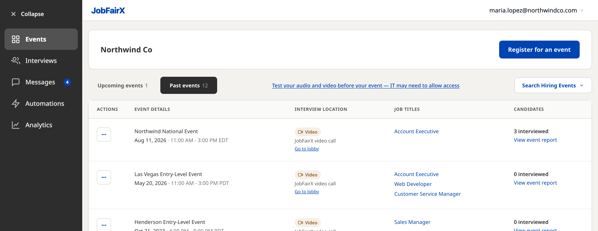
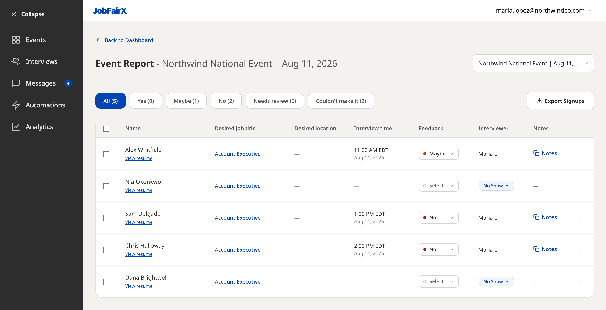
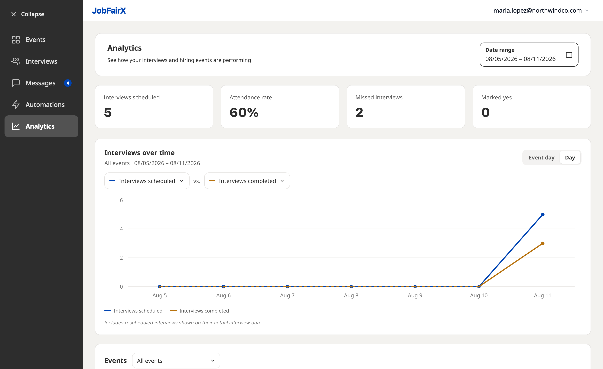
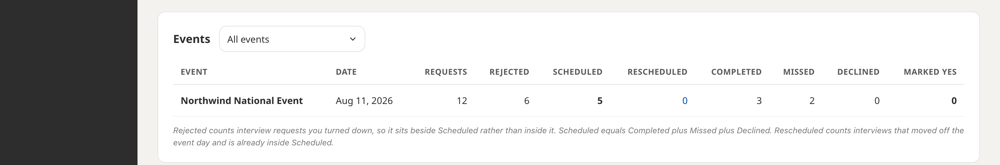

Event performance summary
How to review a hiring event once it is over: who you interviewed and how they were rated, how to export the people who signed up, and how to compare one event against another.
Where to find your results
Results live in two places, and they answer different questions.
- One event, person by person. The event report lists everyone who was due to interview with you at a single event, with their rating and notes.
- Every event, at a glance. Analytics in the left navigation totals your activity over a date range and compares one event against another.
To reach the report, open Events, switch to the Past events tab, and select View event report on the event's row. The Candidates column beside it shows how many people you interviewed. The … menu on the row opens the same report.

The event report
The report opens on the event you picked, named in the heading and again in a dropdown on the right. That dropdown switches to another finished event without going back to the dashboard.
A row of filters sits underneath, each carrying a count, so you can see the shape of the day before reading a single row:
| Filter | Who it shows |
|---|---|
| All | Everyone who was due to interview at this event. |
| Yes | People your team rated Yes. |
| Maybe | People rated Maybe. |
| No | People rated No. |
| Needs review | Interviews that happened but still have no rating. |
| Couldn't make it | People who did not attend their interview. |
Each row carries the candidate's name with View resume underneath, the job and location they were after, the time they interviewed, their Feedback rating, who interviewed them, and their Notes. Somebody who did not turn up shows a No Show badge in place of an interviewer, with no interview time.

The … menu at the end of a row offers Schedule Interview and Send a Message, so a promising candidate can be picked back up without leaving the report.
Ratings are the outcome measure
There is no hire count, cost per hire, or offer figure anywhere in the platform. The outcome JobFairX records is your own team's judgement: the Yes / Maybe / No rating an interviewer gives at the end of each interview. Everything on this page is built on that rating, so the more consistently your team records it, the more useful these numbers are.
A rating is not locked in. Feedback in the report is a dropdown, so you can change it, or fill one in later for anyone sitting under Needs review. Notes work the same way.
Exporting the people who signed up
Export Signups at the top right of the report downloads two things at once:
- a CSV of contact details, named after the event and its date — for example contact-information-columbus-oh-job-fair-aug-25-2026.csv — with a column each for First Name, Last Name, Email and Phone; and
- each candidate's resume as its own PDF, named after the person.
So a single click gives you both a list you can work through in a spreadsheet and the resumes that go with it, without opening anyone's profile.
Analytics across events
Analytics answers the wider question: how are our events doing overall, and which ones went best.
A Date range control at the top right scopes the whole page — the cards, the chart and the table all follow it. It carries presets for the last 7, 30 or 90 days, month to date, this year, and All time, or you can set your own dates. Four summary cards sit underneath: Interviews scheduled, Attendance rate, Missed interviews and Marked yes.
Attendance rate is the one that needs explaining: it is the share of your scheduled interviews that were actually held. Six scheduled with five missed reads as 17%. It is the quickest single measure of whether people are turning up, and the number most worth watching from one event to the next.
Interviews over time plots two metrics against each other. Either can be set to any of nine measures — interviews scheduled, completed, missed, candidate declined, rejected, marked yes, marked maybe, marked no, or interview requests — and the second can be set to None (remove metric) to show a single line. A control on the right groups the chart by event day or by day.

What each number counts
The Events table at the bottom of Analytics breaks the same period down one row per event, which is the quickest way to see which event actually performed.

| Column | What it counts |
|---|---|
| Requests | Interview requests candidates sent you for that event. |
| Rejected | Requests you turned down. Counted beside Scheduled, not inside it. |
| Scheduled | Interviews that ended up booked. |
| Rescheduled | Interviews that moved off the event day. Already inside Scheduled. |
| Completed | Interviews that were actually held. |
| Missed | Booked interviews the candidate did not attend. |
| Declined | Booked interviews the candidate declined. |
| Marked yes | Interviews your team rated Yes. |
Scheduled equals Completed plus Missed plus Declined. Rescheduled sits inside Scheduled and Rejected sits outside it, which is why the row does not add up if you try to total every column. The chart counts a rescheduled interview on the date it was actually held, not the event date.
What to do next
Where to go from here.
- Navigating the hiring platform A guided tour of the dashboard and the left navigation.
- Running your event day Where ratings and notes are recorded in the first place.
- Adding interviewers Bringing colleagues onto an event so they can interview with you.
- Creating and editing events Registering, adding jobs, and setting interview capacity.
- Hiring event best practices Staffing your slots, preparing interviewers, and following up afterwards.
Still need help?
If a number in your report or in Analytics does not look right, contact JobFairX support with the event name and date and the figure you are querying.